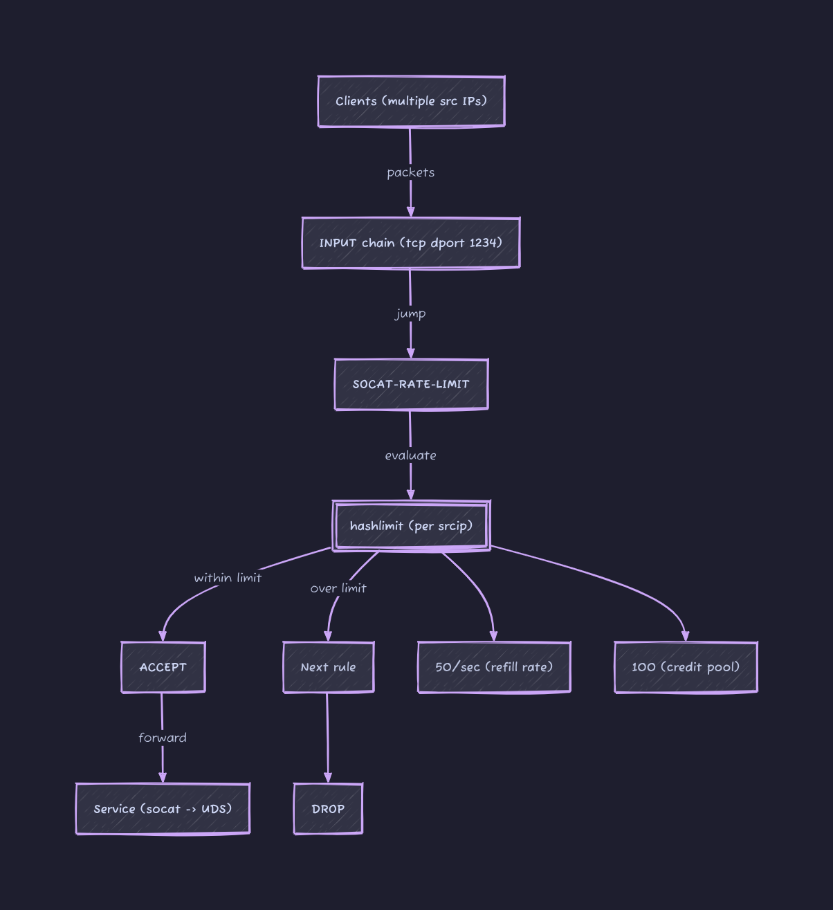

Prevent Abuse with TCP Rate Limiting in Multi-Tenant Systems Using iptables¶

I have a service that runs alongside the application in a SideCar-like manner, communicating with the application via Unix Domain Sockets. To make things easier for users, eliminating the need to run a SideCar in their development environment, I used socat to map the UDS to a port on a development machine. This allows users to directly test the service through this TCP port during development, without having to create their own SideCar to use the UDS.
Because everyone uses this single address for development, there's a problem of mutual interference. While the performance is decent, easily handling hundreds of thousands of QPS, some idiots still use it for load testing, maxing out the resources and affecting others. I have clearly stated in large red letters in the user manual that this is for development and testing only, not for load testing, but some still end up doing it.
I have been really tired lately. I did some research on adding a per-IP rate limit to this port, and it worked quite well. iptables itself is stateless; each incoming packet is judged individually according to the rules. Rate limit, however, is clearly a stateful rule, hence the need for a module. hashlimit(some people use conntrack to limit rates only for newly established connections, leaving existing connections unrestricted, as this could be controlled internally.) However, my goal here is to rate limit all packets, so this module is unnecessary.)
The complete command is as follows:
iptables --new-chain SOCAT-RATE-LIMIT
iptables --append SOCAT-RATE-LIMIT \
--match hashlimit \
--hashlimit-mode srcip \
--hashlimit-upto 50/sec \
--hashlimit-burst 100 \
--hashlimit-name conn_rate_limit \
--jump ACCEPT
iptables --append SOCAT-RATE-LIMIT --jump DROP
iptables -I INPUT -p tcp --dport 1234 --jump SOCAT-RATE-LIMIT
The algorithm for the rate limit mainly involves two parameters:
--hashlimit-uptoEssentially, it's about how many packets can enter within 1 second;50/secit's just20msone packet.- What if
10ms10 packets are sent and no more? This is quite common in testing scenarios; we can't expect users to send packets at a constant rate. That's where this comes--hashlimit-burstin, the literal meaning is how many packets can be sent instantly, but in reality, this parameter can be understood as the available credit.
To understand these two metrics together, each IP initially has burst credit limit. Every packet sent from that IP uses up burst credit. Once the credit is exhausted, any subsequent packets sent from that IP will be dropped. This credit limit uptoincreases at a certain rate, but it only increases up to burstthe initial value, after which it is either used or lost.
For example, if --hashlimit-upto 50/sec --hashlimit-burst 20an IP address sends packets at a constant rate of one packet per millisecond, how many packets will eventually be accepted? The answer is 70. In the first 20 milliseconds, all packets will be accepted because --hashlimit-burstthe initial credit is 20. After that, it relies on a system --hashlimit--upto 50/secto obtain a packet credit every 20 milliseconds. Therefore, it can accept one packet every 20 milliseconds.
What this setup really gives you is not just protection against abuse but a predictable baseline for everyone sharing the same endpoint. In a multi-tenant development setup like this, fairness matters more than raw throughput. You are not trying to squeeze every last packet through the system; you are trying to prevent one user from distorting the experience for everyone else.
The first thing to get right is choosing realistic limits. A value like 50/sec with a moderate burst works well because it absorbs short spikes without allowing sustained abuse. Most development workflows are bursty by nature. Requests come in clusters, not as a perfectly even stream. If you set the burst too low, legitimate usage starts to feel artificially throttled. If you set it too high, the protection becomes ineffective. The goal is not strict policing but shaping behavior.
It is also worth thinking about visibility. iptables will enforce limits silently, which is great for stability but terrible for debugging. When someone hits the rate limit, from their perspective the system just "starts failing." Adding lightweight logging for dropped packets, even temporarily, can make it much easier to explain what is happening. Otherwise, users tend to assume the service is broken rather than rate limited.
Another practical consideration is scope. Per-IP limiting works well in most cases, but it breaks down when multiple users sit behind the same NAT, which is common in corporate or cloud environments. In those cases, a single aggressive user can still impact others sharing the same public IP. If that becomes a real problem, you may need to move up the stack and introduce identity-aware limits inside the application layer rather than relying purely on network-level controls.